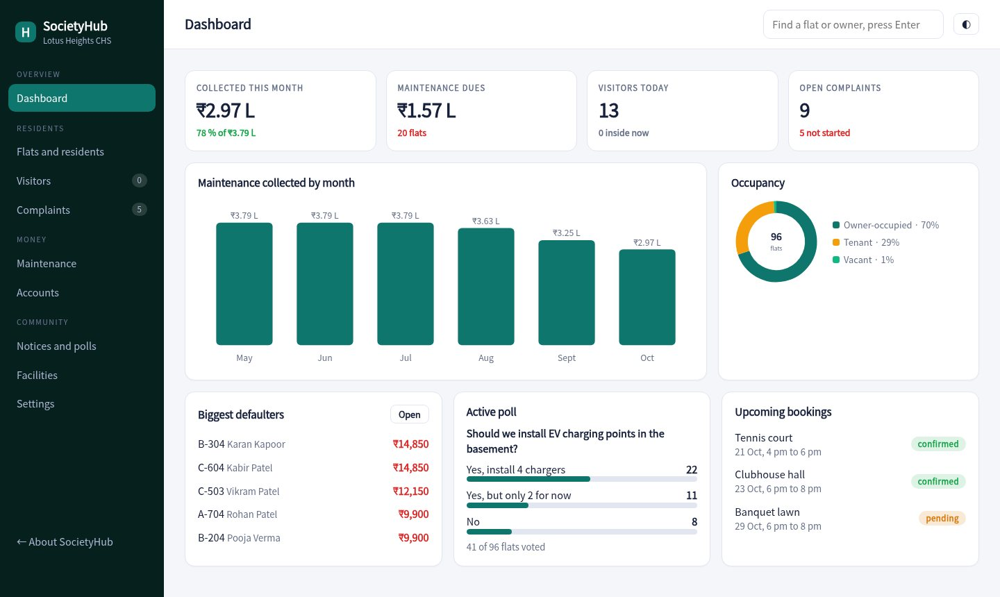
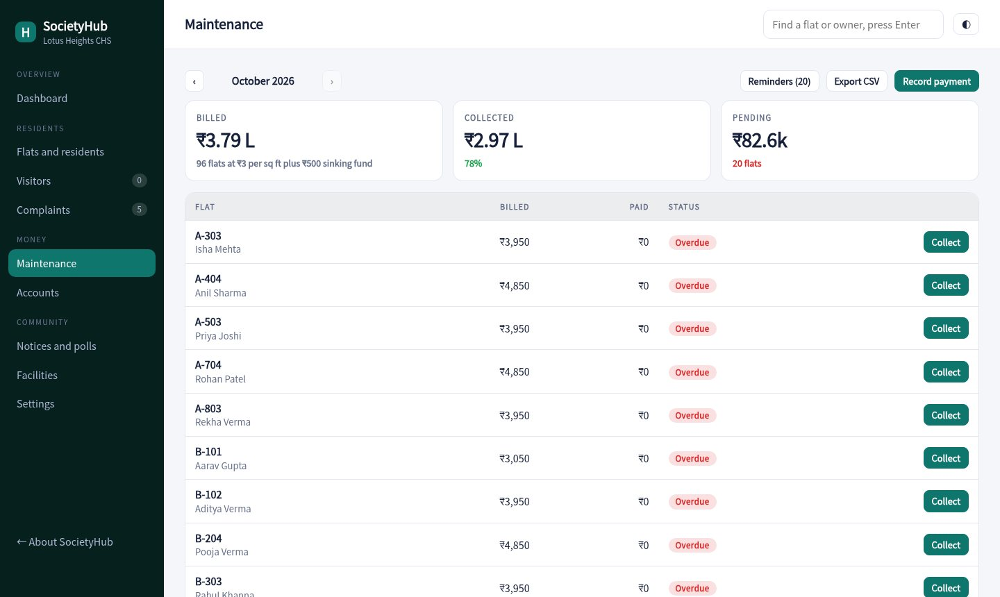
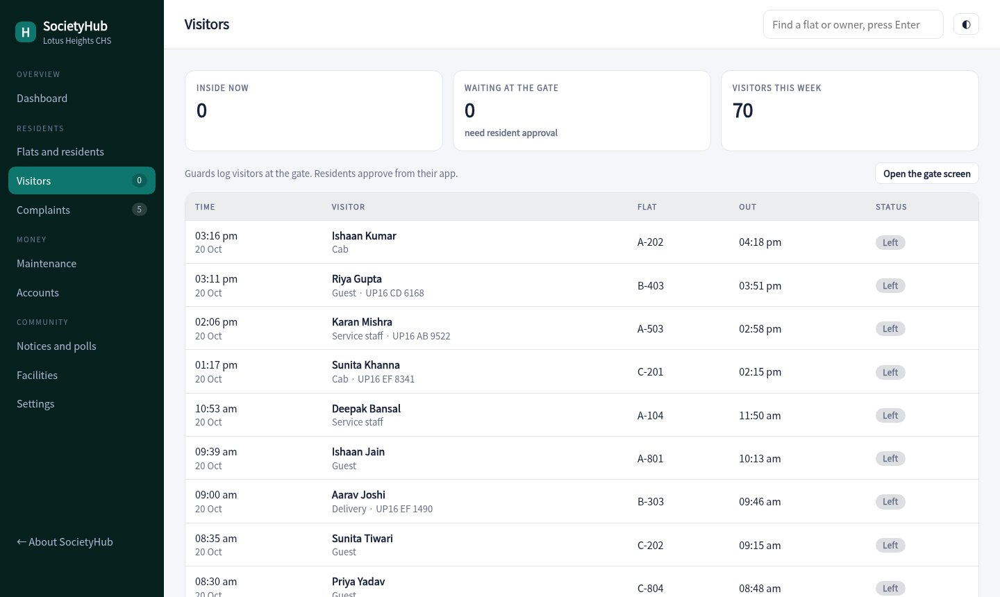
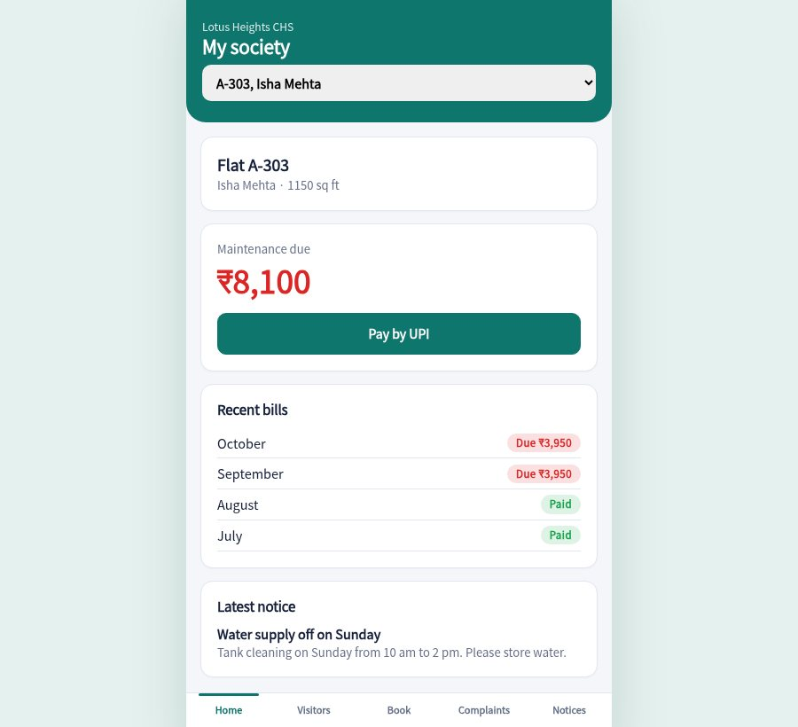

Bills and receipts for every flat, a gate screen for guards that asks residents to approve visitors, a place for complaints and polls, and simple accounts the committee can show at the AGM.

Each flat is billed by area plus a sinking fund. See who has paid, record payments, print receipts and send reminders with a UPI link.
The guard logs a visitor, the resident gets a request and taps Allow or Deny. Pre-approved guests walk in with a four digit code.
Residents raise issues from the app. The committee moves them from open to in progress to resolved, and sees which are past the SLA.
Post a notice or run a poll such as EV chargers. One vote per flat, with results updating as flats vote.
Clubhouse, banquet lawn, tennis court, pool and gym by slot. Double bookings are blocked and paid facilities wait for approval.
Income against expenses by head and by month, with a six month surplus and CSV export for your auditor.
Billed, collected and pending at the top. Flats with dues come first, each with a collect button and a reminder.

Guards log visitors on a simple screen. Residents approve in the app, and the gate sees the answer straight away.

Residents see dues, approve visitors, book facilities, raise complaints and vote in polls from their phone.

Add towers and flats with owner, area and parking. Set the maintenance rate and sinking fund.
Generate the month's dues, collect payments and print receipts.
Give guards the gate screen and share the resident app link.
Sample pricing for this concept build.
No. The gate screen runs on any phone or tablet browser. It shows who is waiting for approval and who has been allowed.
In production each resident signs in with the mobile number registered for the flat. The demo lets you pick a flat.
The demo uses area times a rate plus a sinking fund. A production build can add per-flat adjustments and one-time charges.
No. Flats, residents and payments are generated for a made-up society.
Open the gate screen in one tab and the resident app in another. Log a visitor and approve it.
Open the console